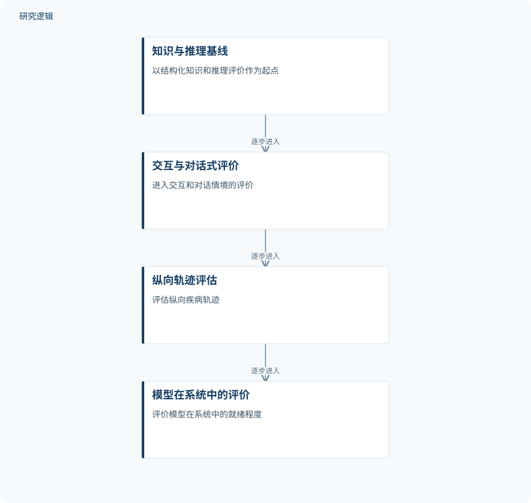

摘要解读
肿瘤学大语言模型评估：从基准表现到临床就绪
Oncology LLM evaluation: From benchmark performance to clinical readiness.
解读更新 2026-11-27 22:17 · 依据公开摘要整理，未核验全文细节
大语言模型在医学基准测试中表现越来越好，但高分能否证明它已准备好用于肿瘤临床？这篇观点文章提出，应把评价视野从答题表现扩展到真实照护过程与系统使用情境。
文章目录
医学基准高分为何不等于临床就绪
肿瘤照护具有纵向、多模态和多学科特征。文章认为，现有医学大模型基准的成功，并不能自然转化为肿瘤临床就绪的证据。
摘要概括了基准与实践之间的四类错位：完整信息与主动收集信息、单一参考答案与受偏好影响的决策、横断面快照与纵向疾病轨迹，以及独立模型表现与模型在系统中的就绪程度。
从知识基线走向系统内评价
针对上述错位，作者提出四阶段评价范式：以结构化知识与推理基线为起点，逐步进入交互和对话式评价、纵向轨迹评估，以及模型在系统中的评价。
这一框架强调，评价应与预期用途和临床风险相匹配，并在模型生命周期内通过持续监测维持评估。摘要未进一步说明各阶段的具体实施流程或指标。
依据摘要整理的四阶段评价范式


示意作者提出的评价阶段递进关系，并非论文原图，也不表示框架已完成验证。
下载 SVG图示关系说明
实线表示相邻阶段的信息流，虚线表示跨阶段联系或反馈。
知识与推理基线 → 交互与对话式评价：逐步进入；交互与对话式评价 → 纵向轨迹评估：逐步进入；纵向轨迹评估 → 模型在系统中的评价：逐步进入
观点文章提出的四类错位与评价路径
摘要报告的核心成果是对四类基准—实践错位的归纳，以及与之相对应的分阶段评价构想。它将临床就绪视为需要逐步积累证据的问题，而非仅凭单次基准得分即可确认。
作者将这一框架定位为肿瘤领域构建临床就绪证据的路径；摘要并未报告该框架已经证明某个模型达到临床就绪，也没有给出量化效果。
摘要尚不能回答的验证范围
这是一篇观点文章，摘要没有提供可判断的研究样本或数据集信息，也未说明具体模型之间的比较。因此，仅凭摘要无法判断相关样本、比较对象及其覆盖范围。
摘要同样没有交代所提框架的具体验证范围或验证结果；这并不意味着论文一定没有讨论这些内容。有关实施细节和证据，需要进一步阅读论文确认。
阅读启发：如何理解大模型的就绪证据
阅读启发：在阅读大语言模型评价研究时，可以留意其测试是否覆盖主动信息收集、对话、纵向变化和系统使用情境，以及这些评价与预期用途、临床风险如何对应。
进一步阅读时，可重点了解文章如何界定各评价阶段及生命周期监测；仅凭当前摘要，尚不能判断这些原则在具体场景中的实施细节。
以上为本站阅读启发与建议，不是论文已验证的结论。